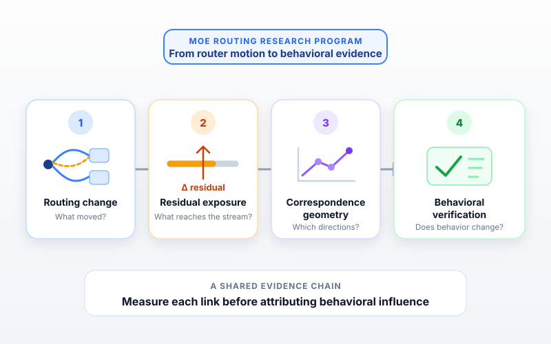
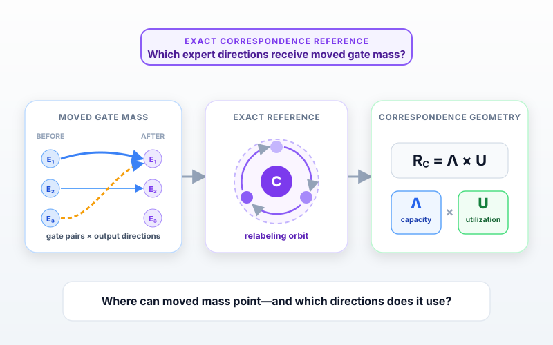
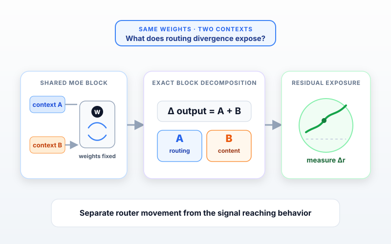

MoE Routing: From Movement to Behavioral Consequence
A connected program on separating routing change from content shift, measuring residual exposure, diagnosing which expert directions receive moved gate mass, and verifying downstream behavior.
Explore the program →
Which Expert Directions Receive Moved Gate Mass?
An exact correspondence reference and an honest test of whether geometry can allocate behavioral measurement.

Routing Divergence Is Not Evidence of Behavioral Influence
An exact routing-content decomposition, seven-checkpoint exposure study, and causal intervention analysis.

Accurate, Grounded, and Wrong
Deceptive Grounding: a clinical RAG system relays a real drug's evidence faithfully but staples it onto the wrong drug, slipping past every standard hallucination, faithfulness, and citation check. 7.8% in production, and worse for medically fine-tuned models.

Foundation Model for Cell Painting (CellPainTR)
A novel contrastive learning framework to explicitly disentangle biological signals from nuisance variables (like batch effects) in high-content imaging data.
Mitigating Racial Bias in Face Age Progression
An investigation into fairness for generative models. We modified a StyleGAN-based age progression model to mitigate racial bias by promoting more equitable transformations across demographics.